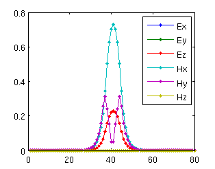
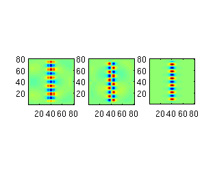
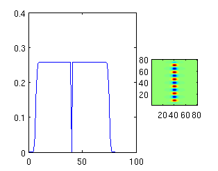

solve_waveguide_mode_example_2D
omega = 0.16;
dims = [80 80 1];
epsilon_wg = 13;
dir = 'y';
mode_num = 1;
wg_dims = [1e9 8];
if dir(1) == 'y'
wg_dims = fliplr(wg_dims);
end
my_rectangle = struct('type', 'rectangle', ...
'position', [0 0], ...
'size', [1e9 1e9], ...
'permittivity', 1);
my_waveguide = struct('type', 'rectangle', ...
'position', [0 0], ...
'size', wg_dims, ...
'permittivity', epsilon_wg);
mu = {ones(dims), ones(dims), ones(dims)};
epsilon = {ones(dims), ones(dims), ones(dims)};
epsilon = add_planar(epsilon, 6, dims(3)/2, {my_rectangle, my_waveguide});
[s_prim, s_dual] = stretched_coordinates(omega, dims, [10 10 0]);
figure(1);
[beta, E, H, J] = solve_waveguide_mode( ...
omega, s_prim, s_dual, mu, epsilon, ...
{[1 dims(2)/2 1], [dims(1) dims(2)/2 dims(3)]}, dir, mode_num);
J{3} = abs(J{3});
[A1, A2, m, e, b] = maxwell_matrices(omega, s_prim, s_dual, mu, epsilon, J);
n = prod(dims);
my_diag = @(z) spdiags(z(:), 0, numel(z), numel(z));
A = A1 * my_diag(m.^-1) * A2 - omega^2 * my_diag(e);
x = A \ b;
y = my_diag(1./(-i*m*omega)) * (A2 * x);
figure(2);
for k = 1 : 3
E{k} = reshape(x((k-1)*n+1 : k*n), dims);
H{k} = reshape(y((k-1)*n+1 : k*n), dims);
subplot(1, 3, k)
imagesc(real(E{k})'); axis equal tight;
set(gca, 'YDir', 'normal');
colormap jet
end
snapnow;
dims
for k = 1 : dims(2)
avg_Hx = 0.5 * (H{1}(:,k,1) + H{1}(:,mod(k-2,dims(2))+1,1));
p(k) = dot(E{3}(:,k,1), avg_Hx);
end
subplot(1, 3, 1:2); plot(abs(p));
Error: 2.832546e-16 (H-field), 1.106652e-14 (E-field).
 
dims =
80 80 1
